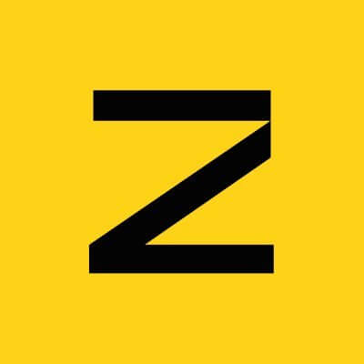

Component Sheet
The building blocks of Zama Confidential Hub. Dark, high-contrast, one accent (Zama yellow #FFD208). Every interactive element is keyboard-navigable with visible focus and an accessible label.
Tokens · color
#000000#0d0d0d#141414#1b1b1b#202020#FFD208#f4f4f1#46c07aButtons
Primary is the only yellow-filled element on a screen. Disabled state carries the blocking reason in its label (“Connect wallet to shield”) rather than a bare greyed button.
Token avatar · shield badge



BROConfidential (ERC-7984) tokens always carry the shield badge. The badge sits on its own dark disc with a canvas-colored ring, so it stays legible over any logo color — including the bright ones (ZAMA yellow, XAUt gold). Logo-less tokens fall back to a 3-letter monogram.
Token dropdown
Custom listbox, never a native <select> — it must show a logo, symbol, full name and balance per row. Confidential variants render with the shield badge on the avatar.
Asset row
USDC MockUSDCMockWETH MockWETHMockEach row shows the public balance and the confidential balance. When the confidential balance is still encrypted it renders as ∗∗∗∗ (never a fake 0). Whole row is a button — click or Enter/Space opens the detail modal.
Flow card
Large tap-first amount input, token dropdown inline in the header, MAX shortcut, live balance. A circular swap button sits between the “from” and “to” cards to flip Shield ⇄ Unshield.
Encrypted-notice panel
This balance is encrypted on-chain. Your wallet signs a permit, then the amount is decrypted locally — it never becomes public.
Shown wherever a confidential balance is still masked. Explains the permit-then-decrypt model in one sentence and offers a single verb-first CTA. Pending state cycles “Signing permit…” → “Decrypting…”.
Step progress
Wrapper can pull your USDCMock.
Approving 500.00 USDCMock for shielding.
Wrap into confidential cUSDCMock.
Multi-transaction flows (Allowance → Approve → Shield, or Request → Finalize for unshield) surface each step with a state: pending, active (spinner), done (check), or error. The submit button mirrors the live verb: Checking allowance…, Approving…, Shielding….
Pills · inputs
Network state lives in a topbar pill: neutral when disconnected, green when on Sepolia, amber when the wallet is on the wrong network. Addresses and amounts use the monospace face.
Rationale — deviations from the current app
- Blocking reason on the CTA. The live app disables actions when disconnected; the redesign puts the reason in the button label (“Connect wallet to shield”, “Switch to Sepolia”) so the user never wonders why a button is dead.
- Shield badge on its own disc. The current badge can sit directly on a logo and lose contrast over bright marks. The redesign gives it a dark disc + canvas ring so it passes contrast over ZAMA-yellow and XAUt-gold logos alike.
- Unified swap card. Shield and Unshield share one stacked swap-style surface with a direction toggle, instead of two separate forms — fewer screens, clearer mental model of “wrap ⇄ unwrap”.
- Encrypted mask uses ∗∗∗∗, never 0. A masked confidential balance is visually distinct from a real zero balance, preventing the “did I lose my tokens?” misread.
- Available-to-shield card. Added a dashboard tile summarizing public value that can be wrapped, turning the shield action into a one-tap next step.